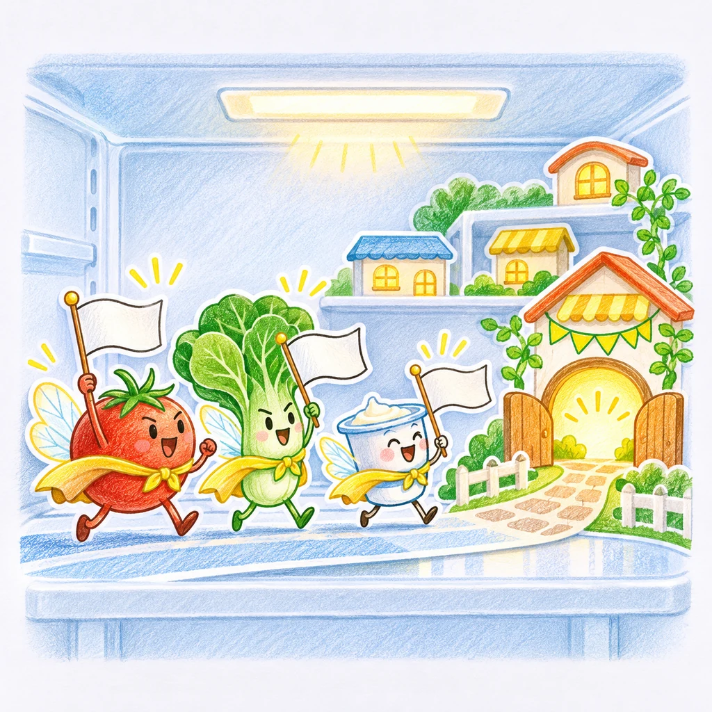

← LAB
🔇

FOOD RESCUE CLUB
냉큼냉장고
누구부터 먹을지, 표정만 봐도 알 수 있어요.
구조 대기
0
이번 주 구조
0
구조 마을
🏡
0
QUICK ADD
구조 명단 등록
이름 + 남은 날, 끝!
식재료 이름
D-
＋
🥛 우유
🥚 달걀
🥬 채소
🍱 반찬
🍓 과일
오늘 구조해요
D-1 이하
곧 만나봐요
D-4 이하
아직 여유로워요
D-5 이상
RESCUE TOWN
구조된 친구들의 마을
제때 먹은 식재료가 많아질수록 마을이 북적여요.
🏡 🌱
모든 식재료와 기록 초기화
EDIT RESCUE CARD
구조 카드 수정
이름
오늘부터 남은 날
취소
저장
냉장고를 비울까요?
식재료와 구조 기록이 이 기기에서 모두 삭제돼요. 되돌릴 수 없어요.
취소
전부 삭제